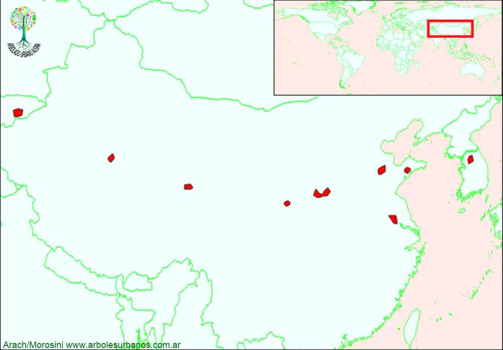

Click en las imágenes para ampliar

{kind=link}
{kind=link}
{kind=link}
{kind=link}
Tuya oriental
NOMBRE CIENTÍFICO: Platycladus orientalis
FAMILIA BOTÁNICA: Cupresáceas
ORIGEN: Es una especie que se encuentra en en la península de Corea, el este de Rusia y China, se cree que el lugar de origen es el centro este de China, también hay muchos individuos a lo largo de la antigua ruta de la seda, de por si ahora se encuentran relictos aislados
DESCRIPCIÓN GENERAL: Es una conífera siempreverde de porte entre pequeño y mediano, aunque se encuentran Individuos de más de 15 metros y de más de un metro de diámetro. Tiene una copa de forma ovoidea o piramidal cuando son individuos jóvenes, llegando a ser irregular o redondeada cuando es adulta. Tiene una corteza rojiza, agrietada longitudinalmente y desprendiéndose en tiras.
HOJAS: El follaje está compuesto por hojas pequeñas, de forma escuamiformes de color verde, se disponen de manera opuesta decusada cubriendo la totalidad de los tallos jóvenes.Durante los inviernos, el follaje se torna de color marrón u ocre.
ESTRÓBILOS: los estróbilos masculinos son pequeños y de color amarillento de menos de un cm de largo. Los femeninos está formado por 6 u 8 escamas de color verde glauco cuando se está formando y de color marrón al madurar, planas al principio y luego reflejas, se abren dejando al descubierto sus semillas.
USOS: Muy utilizado en cercos, es una especie de lentro crecimiento, también se lo utiliza en pequeños jardines y en rocallas, junto con otras plantas.
REPRODUCCIÓN: Las semillas se deben estratificar durrante 60 días a 4º, germinan con relativa facilidad (más de un 50%). las estacas de maderra suave, se deben tomar a principios de la primavera y utilizar hormonas de enraizamiento.
PARTICULARIDADES: Es una especie que supera los 1000 años de vida. Existen diversas variedades de distinto tamaño y con follaje variegado y demás.